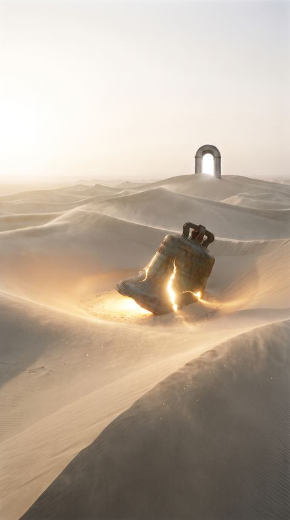
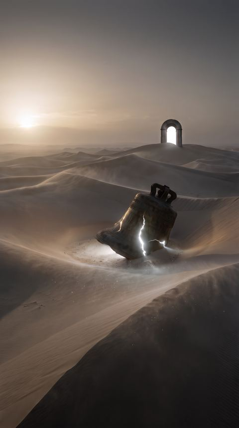
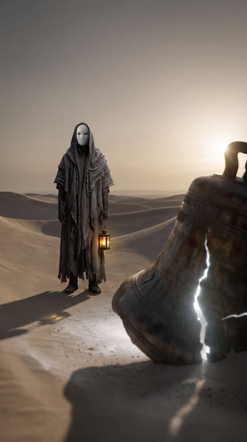
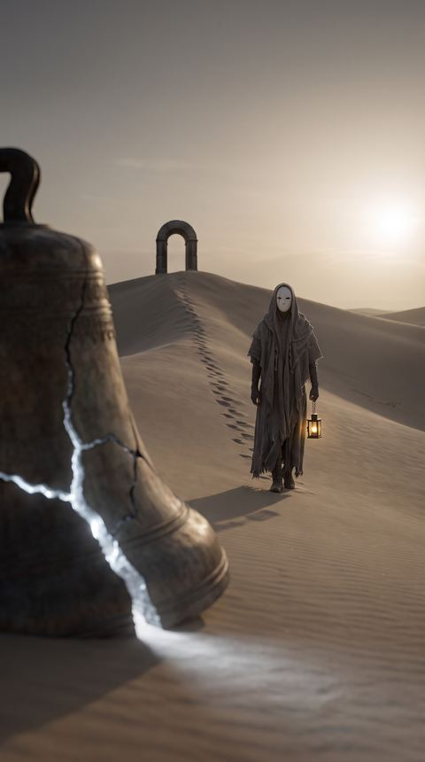
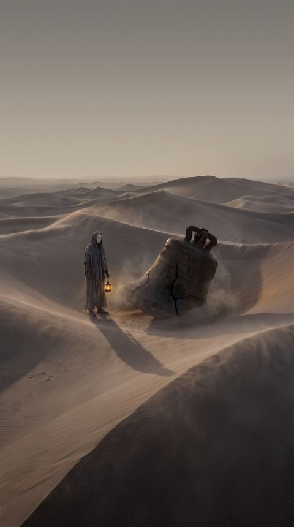
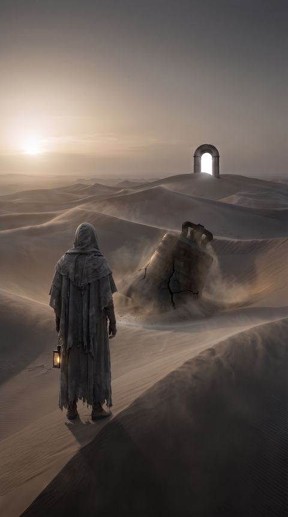
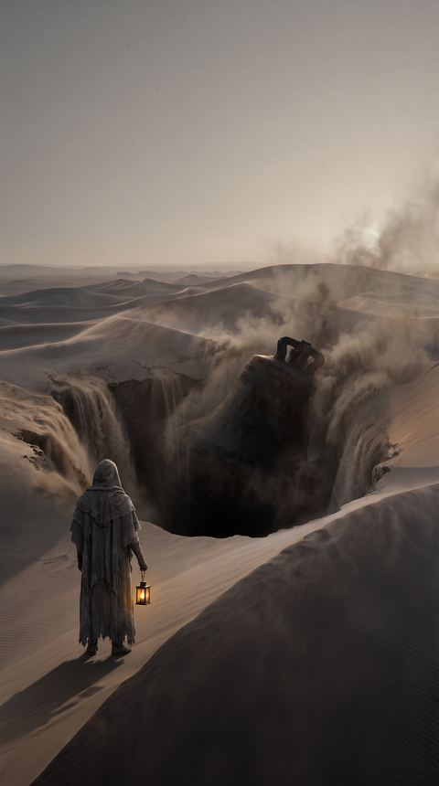
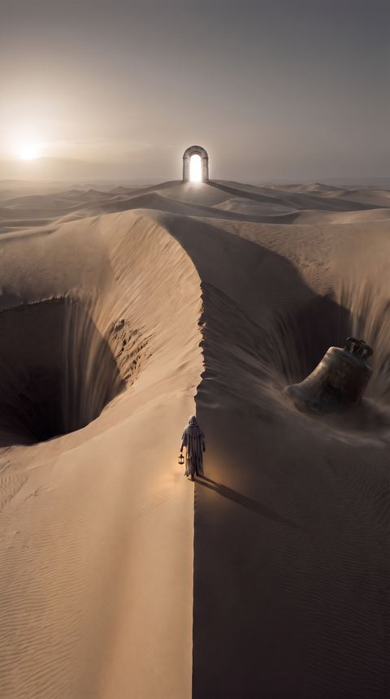
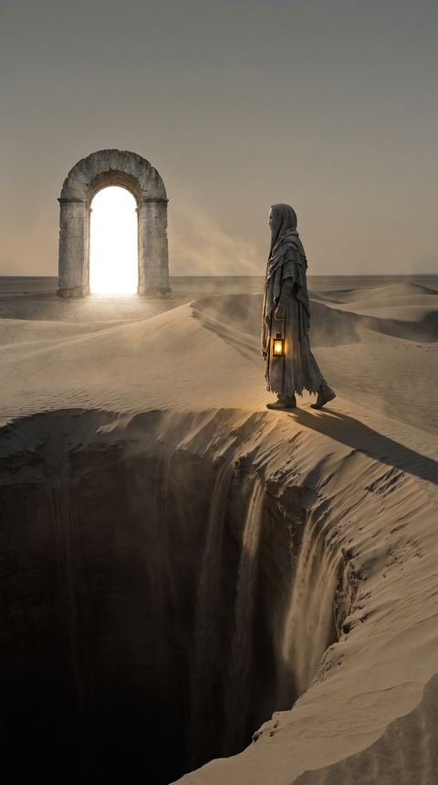
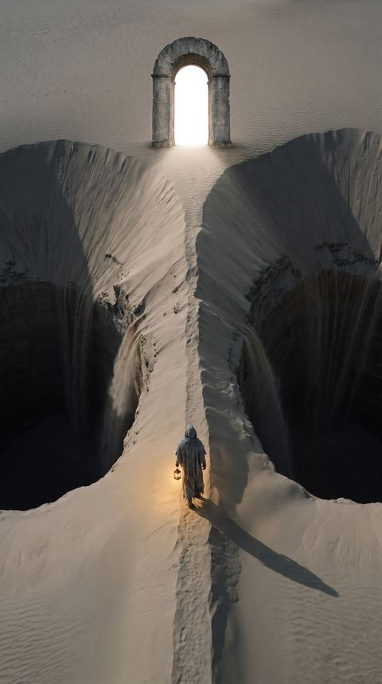

How a world
gets made.
Twenty-seven seconds of film, from a map on paper to the posted Short. Including the round of keyframes that failed, the shot that was rejected twice, and the rules the series keeps because of them.
One image the whole film is built from
Every world starts with a single approved image, and every keyframe is made from it, so the light and the landmarks never drift. The first version had a gold bell. It matched the lantern and stole its warmth, so the bell became cold silver and the lantern stayed the only warm light in the frame.


Write the geography down first
Image models don't remember where anything is. So before the second round of keyframes, the world got a written map, and every shot was checked against it: which way he faces, which side the sun is on, where the bell sits and how big it looks, how far away the exit door is, and how much of the desert has fallen in.
- One door in at the south, one door out on the far north ridge.
- The bell, about twice his height, stands just east of his path, and sinks into the east pit.
- Looking north the sun is on the left; looking south, on the right.
- The exit door grows shot by shot: tiny, nearer, then filling the frame.
- The desert goes calm, trembling, grains lifting, collapsing.
The round that failed,
and the round that held.
The first round of keyframes looked good one at a time and fell apart side by side: he walked past the bell, turned to face the camera beside it, and the ground split into the wrong shape. Only one of twelve survived review. The second round, made against the map, held together.






When a side view won't work, go up
The walk along the ridge was meant to be seen from the side. Both attempts looked pasted together: the figure, the pits and the door never sat in the same space. The same moment from above reads at a glance and shows the geography the whole film depends on.


From twelve clips to ten shots
- Every clip checked frame by frameBefore the edit, each clip was checked for hidden cuts, morphing faces, the mask's crack on the wrong side and the lantern in the wrong hand.
- Fixes the models kept undoingEvery front view had the mask mirrored so the crack stays on its side. Bare fingers kept appearing by the lantern, so it hangs from its chain and one shot is cropped slightly.
- Two finished shots cutTwo shots of the walk in, over the crest and down the dune, were made and then cut at the director's call.
- Sound, cleaned before it was raisedQuiet sound effects turned to grain when boosted, so they're cleaned first now. Designed footsteps were tried five ways and dropped; music was added by hand.
Rules learned from real mistakes
Each rule came from something that went wrong on screen. Every new world is made with all of them.
- One world imageEvery keyframe is built from one approved image of the world, with one repeated line about the light.From World 01's rejected first cut
- Never the same angle twiceNo cut between two shots from the same angle and direction.World 01
- Inserts obey the mapA cutaway has to agree with the geography, or show only a detail.World 01
- Map before keyframesFacing, sun, landmark side and size, distance to the exit, the state of the world, written down first.World 02
- One steady ambienceA single bed of sound under the film, with the clips' strongest effects kept and levelled.World 01
- Clean before you boostA quiet sound effect is cleaned and band-limited before it's raised.World 02
- No footsteps by defaultUse the clip's own synced sound when it's good; otherwise leave them out.World 02